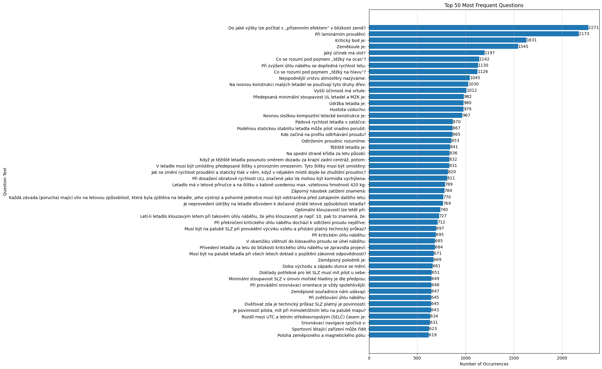

Správná odpověď: asi do výšky jako je polovina rozpětí křídla
Správná odpověď: nedochází k vzájemnému promíchávání proudnic
Správná odpověď: místo na trati plánované, ze kterého je stejná časová vzdálenost do místa startu i do místa přistání
Správná odpověď: rotační elipsoid na pólech zploštělý
Správná odpověď: umožní zvětšení kritického úhlu náběhu
Správná odpověď: jestliže se nos letadla při uvolnění řízení klopí nahoru (zvedá)
Správná odpověď: jestliže se nos letadla za letu při uvolnění řízení klopí dolů
Správná odpověď: smrk, borovice
Správná odpověď: souhrn činností zajišťujících zachování způsobilosti k leteckému provozu systémem prohlídek, ošetření a oprav
Správná odpověď: roste s klesající teplotou vzduchu
Správná odpověď: tkanina nebo stejnosměrná skleněná vlákna, nebo vlákna z jiných k tomu určených materiálů
Správná odpověď: je vyšší než v přímém ustáleném letu a závisí na náklonu letadla
Správná odpověď: nevhodným rozmístěním nákladu, nedodržením min. hmotnosti pilota při „solo“ letu letadla.
Správná odpověď: v mezní vrstvě na sací straně profilu od odtokové hrany
Správná odpověď: proud vzduchu přestane sledovat tvar profilu
Správná odpověď: působiště tíhové síly
Správná odpověď: letadlo bude mít snahu samovolně přecházet na větší úhly náběhu
Správná odpověď: v kabině letadla a v zorném poli pilota
Správná odpověď: rychlost se zvýší, statický tlak klesne
Správná odpověď: na maimální výchylky
Správná odpověď: pro vzlet musí být dodržena hmotnost 420 kg
Správná odpověď: pilot je tažen ze sedačky a vztlak ohýbá křídlo letadla směrem dolů (vztaženo k letadlu)
Správná odpověď: ano – musí být odstraněna před zahájením dalšího letu
Správná odpověď: ano
Správná odpověď: jednom úhlu náběhu
Správná odpověď: doletí z výšky 1 km do vzdálenosti 10 km ( při bezvětří)
Správná odpověď: na křídle
Správná odpověď: dosahuje součinitel vztlaku maimální hodnoty, při dalším zvyšování úhlu náběhu prudce klesá
Správná odpověď: chvěním letadla, patrným i v řízení letadla způsobené tím, že proud vzduchu, který se odtrhává na křídle zasahuje ocasní plochy
Správná odpověď: polovina poledníkové kružnice
Správná odpověď: s roční dobou
Správná odpověď: při každém letu
Správná odpověď: vyhledat a určit několik orientačních bodů
Správná odpověď: zeměpisnou polohu určitého místa
Správná odpověď: roste součinitel vztlaku a odporu
Správná odpověď: velitele SLZ (pilota)
Správná odpověď: srovnávání terénu s mapou a opačně
Správná odpověď: pilot, který je držitelem platného pilotního průkazu s příslušnou kvalifikací, nebo pilotní žák za podmínek stanovených výcvikovou osnovou
Správná odpověď: není shodná
Správná odpověď: 15 m po 300 m délky vzletu
Správná odpověď: zvětší klouzavost a umožní to použití menší minimální rychlosti
Správná odpověď: letadlo v důsledku značného součinitele odporu bude velice pomalu zrychlovat, takže délka vzletu se výrazně prodlouží
Správná odpověď: vzlet je nebezpečný vzhledem k výrazně zhoršeným aerodynamickým vlastnostem
Správná odpověď: ve směru otáčení hodinových ručiček
Správná odpověď: nesymetrického odtržení proudění na křídle
Správná odpověď: mohlo by dojít k překročení povoleného zatížení vztlakové klapky
Správná odpověď: vyšší letová hmotnost, vyšší teplota ovzduší, vzletová dráha proti svahu, vítr do zad
Správná odpověď: 12 měsíců u osob od 75 let
Správná odpověď: pokusit se navázat spojení se zakročujícím letadlem a ohlásit svou identifikaci a povahu letu
Správná odpověď: změní, fouká-li vítr
Správná odpověď: rychlost, kterou letadlo letí vůči zemi
Správná odpověď: že přistání na dotyčném letišti je zakázáno a zákaz se pravděpodobně prodlouží
Správná odpověď: že letadla mohou vzlétat a přistávat jen na VPD, jiné pohyby nemusí být omezeny jen na VPD a pojedové dráhy
Správná odpověď: klidnější chod a může mít menší průměr
Správná odpověď: protože se podstatně zmenší vztlak a letadlo se prosedne
Správná odpověď: větší účinnost
Správná odpověď: nemění polohu
Správná odpověď: malý úhel nastavení vrtule
Správná odpověď: že se od letadel požaduje, aby přistávala, vzlétávala a pojížděla pouze na drahách a pojezdových drahách
Správná odpověď: rozjezd, odpoutání, rozlet, přechodový oblouk, stoupání
Správná odpověď: vzhledem ke špatnému stavu provozní plochy nebo z jakékoliv jiné příčiny se musí přiblížení na přistání a přistání provádět zvláště opatrně
Správná odpověď: na bezprašném bez drobných nečistot (kamínky apod.)
Správná odpověď: změnu kurzu vpravo
Správná odpověď: rychlým zásahem do podélného řízení
Správná odpověď: 1,5 km letouny a 0,8 km vrtulníky
Správná odpověď: nezmění, protože vztah mezi součinitelem vztlaku a součinitelem odporu se nemění
Správná odpověď: nevyváženost vrtule, nebezpečí vibrací, odlétávající kusy ledu ohrožující další části letadla a motoru, snížení účinnosti vrtule
Správná odpověď: menší než při cestovním letu
Správná odpověď: při letu ve výkluzové zatáčce
Správná odpověď: v urychlení vnitřního křídla vychýlením směrového kormidla na opačnou stranu, než je smysl otáčení vývrtky a převedení letadla do strmého sestupného letu potlačením řídící páky
Správná odpověď: větší než pro let v horizontu
Správná odpověď: stoupání i klesání letadla
Správná odpověď: nedochází k odtržení proudění
Správná odpověď: vysílat hlášení na příslušném kmitočtu daného letiště zprávu obsahující značku letadla, výšku, místo vstupu do letové zóny ATZ, místo zařazení do okruhu a polohy na okruhu
Správná odpověď: pro přesné nastavení určitého tlaku vzduchu
Správná odpověď: nulovou výšku
Správná odpověď: řízený okrsek letiště
Správná odpověď: nesmí vletět pokud příslušný úřad nevydá zvláštní povolení
Správná odpověď: v AIP ČR nebo platné letecké mapě
Správná odpověď: je to úhel, o který by se sklonila magnetka kompasu, pokud by na ní nebylo závažíčko
Správná odpověď: tíhou letadla a výslednou aerodynamiclou silou,
Správná odpověď: pro vyrovnání tlaku v tlakoměrné krabici a v přístroji
Správná odpověď: může, protože se druhý vývod používá pro připojení termoláhve se zásobním objemem vzduchu
Správná odpověď: výšku nad úrovní země
Správná odpověď: na principu vychylování setrvačníku, tj. na precesním pohybu.
Správná odpověď: vymezený vzdušný prostor, který slouží k ochraně letištního provozu
Správná odpověď: může proletět za splnění stanovených podmínek
Správná odpověď: udává počet kilogramů celkové hmotnosti na m2 nosné plochy
Správná odpověď: obvykle kruh o poloměru 3 NM (5,5 km), vertikálně od země do nadmořské výšky 4000ft (1200 m)
Správná odpověď: od země do různých výšek (viz AIP nebo platná letecká mapa)
Správná odpověď: v úhlech a vzdálenostech
Správná odpověď: vychýlí levé křidélko nahoru, pravé dolů a letadlo se nakloní doleva
Správná odpověď: poledník, procházející hvězdárnou v Greenwich v Anglii
Správná odpověď: nevyžaduje
Správná odpověď: úhel mezi podélnou osou letadla a tratí letěnou
Správná odpověď: opusťte přistávací plochu v používání
Správná odpověď: v hod, min, sec s tím, že minuta začíná 1.sec a končí 60.sec
Správná odpověď: v určitém režimu letu odstraní působení sil v řízení
Správná odpověď: povrch země
Správná odpověď: navigační příprava před letem, mapa, viditelnost země
Správná odpověď: nejsou
Správná odpověď: při každém letu
Správná odpověď: vně oblaků za stálé dohlednosti země
Správná odpověď: odstraní působení síly v řízení
Správná odpověď: průkaz totožnosti, pilotní průkaz nebo doklad žáka, technický průkaz SLZ, doklad o pojištění za škody způsobené provozem SLZ
Správná odpověď: klonění, protože vnější křídlo má při zatáčení větší vztlak, než vnitřní
Správná odpověď: kladný (+) červeně, záporný (–) modře
Správná odpověď: věrně zobrazují topografickou situaci a úhly
Správná odpověď: tlačit na řídící páku, výškové kormidlo se vychýlí dolů
Správná odpověď: stůjte
Správná odpověď: vyžaduje, a to určeným leteckým lékařem
Správná odpověď: spotřebujete 45,5 l
Správná odpověď: s hlavami válců dolů a v řadě za sebou
Správná odpověď: poledník, zvaný též základní, procházející hvězdárnou v Greenwich v Anglii
Správná odpověď: převod pohybu přímočarého – vratného na pohyb otáčivý
Správná odpověď: letadlo se nakloní doprava, začne bočit doprava a v důsledku toho začne zatáčet doprava
Správná odpověď: traťovou rychlost – W (TR)
Správná odpověď: pouze k tomu určená lepidla
Správná odpověď: odlehčovací ploška, jejímž účelem je zmenšení sil v řízení
Správná odpověď: nadmořské výšce
Správná odpověď: odstranění karbonu ze spalovacího prostoru
Správná odpověď: se vychýlí směrové kormidlo doprava, letadlo zatočí doprava
Správná odpověď: hmotnost integrovaného záchranného systému v případě jeho zástavby
Správná odpověď: uvolněte cestu jinému letadlu a pokračujte v letu na okruhu
Správná odpověď: v km/hod, v MPH, v uzlech (kts)
Správná odpověď: přitáhnout řídící páku, výškové kormidlo se vychýlí nahoru
Správná odpověď: zatížení způsobená vertikálními poryvy vzduchu, zatížení od manévrů a obratů, zatížení od sil při vzletu a přistání
Správná odpověď: jakékoliv plochy, vyslovil-li s využíváním plochy k tomuto účelu souhlas vlastník plochy, při splnění ostatních podmínek
Správná odpověď: topografickou situací
Správná odpověď: musí správně fungovat všechny části nezbytné pro bezpečný provoz letadla
Správná odpověď: spotřebujete 16,5 l
Správná odpověď: je doporučený pro zvýšení bezpečnosti
Správná odpověď: topografická plocha
Správná odpověď: je to zatížení, jehož velikost se s časem nemění nebo se mění poměrně pomalu (vliv jeho časového průběhu je zanedbatelný)
Správná odpověď: vymezuje oblast možných a dovolených provozních násobků při dané rychlosti letu
Správná odpověď: zatížení používané při pevnostním průkazu jako maimální hodnota, která se u letadla za provozu může vyskytnout
Správná odpověď: s ozubenými koly nebo se řemenem
Správná odpověď: kružnice jejíž rovina prochází středem zeměkoule
Správná odpověď: plocha ležící mimo obytné území obce ve vzdálenosti nejméně 100 m od obytných budov a při provozu nebudou ve vzdálenosti menší než 50 m od SLZ osoby nezúčastněné na provozu
Správná odpověď: statické a dynamické
Správná odpověď: maimálně jeden rok
Správná odpověď: velitel letadla (pilot)
Správná odpověď: především kombinovaná zatížení přejímaná od ocasních ploch
Správná odpověď: je to zatížení, jehož velikost se mění s časem rychle
Správná odpověď: poměr výsledné aerodynamické síly ku velikosti tíhy letadla
Správná odpověď: čára spojující místa s nulovou deklinací
Správná odpověď: když letadlo poletí malou rychlostí a pilot náhle zvýší výkon motoru
Správná odpověď: které vzlétá nebo se nachází v poloze pro vzlet
Správná odpověď: dostatečnou vzdálenost
Správná odpověď: kružnice, jejíž rovina neprochází středem zeměkoule
Správná odpověď: vpravo
Správná odpověď: během dne ke kopci
Správná odpověď: předepsaným utahovacím momentem daným výrobcem vrtule
Správná odpověď: od severu zeměpisného místního poledníku
Správná odpověď: mít vítr v zádech
Správná odpověď: plánovaný traťový úhel zeměpisný
Správná odpověď: obě letadla změnou kurzu vpravo
Správná odpověď: musí dát tomuto letadlu přednost
Správná odpověď: dojde ke zvýšenému namáhání vrtule s následným možným poškozením
Správná odpověď: větší než při vzletu
Správná odpověď: vraťte se na přistání
Správná odpověď: pojíždějícímu zprava
Správná odpověď: vpravo tak, aby mezi letadly byla zajištěna dostatečná vzdálenost
Správná odpověď: mohou být velmi snadno překročeny ma. přípustné otáčky vrtule
Správná odpověď: přistává nebo je v poslední fázi přiblížení na přistání
Správná odpověď: je nežádoucí z důvodu snížení účinnosti vrtule
Správná odpověď: při přiblížení na přistání nebo po vzletu provádět všechny zatáčky doleva, pokud není přikázáno jinak
Správná odpověď: všechny profily listu vrtule potom pracují zhruba na stejném úhlu náběhu
Správná odpověď: přistaňte na tomto letišti a přijeďte na odbavovací plochu
Správná odpověď: veškerý provoz na provozní ploše letiště a všechna letadla letící v blízkosti letiště
Správná odpověď: pokud přistává a je v poslední fázi přiblížení na přistání
Správná odpověď: se zmenší rychlost letu a otáčky klesnou
Správná odpověď: zakázáno
Správná odpověď: okamžitě žádat o vyjasnění a přitom se nadále řídit vizuálními instrukcemi předávanými zakročujícím letadlem
Správná odpověď: přistání povoleno
Správná odpověď: vyhnout tím, že nadletí, podletí nebo křižuje jeho trať v dostatečné vzdálenosti
Správná odpověď: dotaženy přes jednu centrální podložku
Správná odpověď: se všemi dostupnými informacemi, které se týkají zamýšleného letu
Správná odpověď: vytvářela nebezpečí srážky
Správná odpověď: se provádějí výsadky
Správná odpověď: teplota, na kterou musí být ochlazen vzduch, aby nastala kondenzace
Správná odpověď: přistání i vzlet letadla
Správná odpověď: pravidelně kontroluje při výrobcem předepsaných prohlídkách
Správná odpověď: s vrtulí s malým úhlem nastavení
Správná odpověď: konvektivním vertikálním pohybům
Správná odpověď: na nastavení výškoměru na hodnotu 1013,2 hPa a vertikální polohy letadla se vyjadřují v letových hladinách
Správná odpověď: Ano
Správná odpověď: motorové letadlo se musí vyhnout vzducholodím, kluzákům a balonům a jiným motorovým letounům nebo SLZ, které mají ve vleku jiná letadla nebo předměty
Správná odpověď: 1013,25 hPa, +15°C
Správná odpověď: určuje magnetka kompasu, na kterou nepůsobí žádné vedlejší rušivé vlivy
Správná odpověď: musí být v souladu s Tabulkou cestovních hladin
Správná odpověď: sportovní létající zařízení
Správná odpověď: vraťte se na místo odkud jste vyjel
Správná odpověď: toto pravidlo však nezbavuje velitele letadla odpovědnosti provést takové opatření, které nejlépe zabrání srážce
Správná odpověď: nejméně 1500 m horizontálně a 300 m vertikálně
Správná odpověď: jsou v ní nepříznivé podmínky pro vznik výstupných proudů
Správná odpověď: se dá podletět
Správná odpověď: nepřistávejte, letiště není bezpečné
Správná odpověď: velitel letadla odpovídá za provedení letu podle pravidel létání, ať letadlo sám řídí či nikoliv, vyjma případů, když si okolnosti vynutí odchylku od těchto pravidel v zájmu bezpečnosti
Správná odpověď: předložený letový plán, pokud to dané státy vyžadují
Správná odpověď: 150 m s výjimkou létání na svahu
Správná odpověď: zeměpisnou polohu letiště
Správná odpověď: pojíždění povoleno
Správná odpověď: umístěného v rozích prahu se základnou směřující ven
Správná odpověď: kýváním letadlem a záblesky navigačních světel v nepravidelných intervalech a následováním zakročujícího letadla
Správná odpověď: mj. největší vzdálenosti, na kterou je možno spolehlivě vidět a rozeznat na světlém pozadí černý předmět vhodných rozměrů, umístěný u země
Správná odpověď: inspektor provozu a techniky LAA ČR, osoba pověřená MD ČR nebo ÚCL, příslušník Policie ČR
Správná odpověď: předem zkoordinovat svůj přílet nebo odlet se stanovištěm AFIS nebo provozovatelem letiště
Správná odpověď: (m 3) + 10% z výsledku násobení
Správná odpověď: výše letící letadlo dát přednost letadlu letícímu níže
Správná odpověď: let VFR, kterému vydala služba řízení letového provozu povolení k letu v řízeném okrsku v meteorologických podmínkách horších než VMC
Správná odpověď: část draku letadla, sloužící hlavně ke spojení jednotlivých části draku a k umístění posádky, cestujících, nákladu, výstroje popř. hnací jednotky
Správná odpověď: velitel letadla (pilot)
Správná odpověď: 60 měsíců u osob do 40 let
Správná odpověď: směr vzletu v desítkách stupňů magnetického kompasu
Správná odpověď: húlava na čele bouřky, eistence silného vzestupného proudu před húlavou, silný sestupný proud za húlavou v oblasti vypadávajících srážek, silné nárazy větru
Správná odpověď: 1,5 km pro letouny a 0,8 km pro vrtulníky
Správná odpověď: zhoršují
Správná odpověď: je stejně velká a opačně orientovaná jako tíha
Správná odpověď: oblaka Cb - cumulonimbus na čele fronty ukrytá v nízké vrstevnaté oblačnosti, turbulence a námraza
Správná odpověď: teplotu, kterou by vzduch měl v okamžiku stavu nasycení
Správná odpověď: drak, pohonnou soustavu, výstroj
Správná odpověď: v limitu stanoveném v provozní příručce pro daný typ letadla
Správná odpověď: zastavíte přesně na zamýšleném kursu
Správná odpověď: Nestabilní podmínky a vysoký obsah vlhkosti
Správná odpověď: pokles teploty s výškou
Správná odpověď: nic shazovat nebo rozprašovat, s výjimkou dodržení určitých podmínek
Správná odpověď: 300 m nad nejvyšší překážkou v okruhu 600 m od letadla
Správná odpověď: na letišti je provoz kluzáků
Správná odpověď: nebyla ohrožena bezpečnost cestujících, nákladu, osob a majetku na zemi
Správná odpověď: musí provádět vpravo
Správná odpověď: přírodní jev doprovázený intenzivními srážkami a elektrickými výboji
Správná odpověď: bude ukazovat stále stejný kurs
Správná odpověď: letové příručce
Správná odpověď: posádka o hmotnotsi 150kg nemůže provést let.
Správná odpověď: nezávisle zajištěné veškeré uvolnitelné příslušenství motoru proti pádu do vrtule
Správná odpověď: přetočíte
Správná odpověď: Pilot (velitel) letadla má právo rozhodnout s konečnou platností o provedení letu
Správná odpověď: dovážení své hmotnosti na 70 kg
Správná odpověď: těžiště je v rozsahu dle letové příručky
Správná odpověď: nosná soustava, trup, ocasní plochy, řízení a přistávací zařízení
Správná odpověď: nemůže letět, krajní poloha centráže by byla překročena
Správná odpověď: odebrat náklad
Správná odpověď: ukáže změnu kurzu
Správná odpověď: všechny maimální a pokud jsou dány i minimální hodnoty pro bezpečný provoz musí být označeny červenou radiální čárou
Správná odpověď: nenasycená vzduchová částice při svém výstupu z rovnovážné polohy dále stoupá i když přestane působit vnější síla
Správná odpověď: ano, jde o nežádoucí jev, kdy odtržením proudu vzniká rozsáhlý úplav
Správná odpověď: ano, vždy na začátku letového dne
Správná odpověď: stabilitu a ovladatelnost
Správná odpověď: 3, podélná, příčná (bočná) a svislá (kolmá)
Správná odpověď: neúměrně zvětšují síly v řízení při vzletu i přistání, délka vzletu se prodlužuje
Správná odpověď: kolikrát je v daném okamžiku letu vztlak větší než tíha
Správná odpověď: posouvá směrem dopředu
Správná odpověď: rychlost se sníží, statický tlak se zvýší
Správná odpověď: uložena pokuta až do výše 500.000,-- Kč
Správná odpověď: výrazně zhoršuje podélná stabilita letadla
Správná odpověď: celkový tlak a statický tlak
Správná odpověď: silné výstupné proudy s maimem v horní polovině Cb – cumulonimbu, silná turbulence, sestupné proudy s maimem blízko základny, silná námraza, elektrické vlastnosti Cb - cumulonimbu
Správná odpověď: výkluzovou zatáčku
Správná odpověď: ohřevu vzduchu o zemský povrch při instabilním zvrstvení
Správná odpověď: pozorně prohlížet terén před letadlem, vedle letadla a důsledně porovnávat mapu s terénem
Správná odpověď: hmotnost vystrojeného letadla bez posádky, bez přepravovaného nákladu, bez paliva, ale s náplněmi v motoru (olej, voda)
Správná odpověď: traťová rychlost
Správná odpověď: silnou turbulencí, silnou námrazou, aktivní bouřkovou činností, silnými přeháňkami, silným větrem
Správná odpověď: ocasní plochy bez pevné části, jsou pohyblivé jako celek
Správná odpověď: zákaz kouření, vypnuta palubní síť , letadlo uzemněno, vypnutý motor
Správná odpověď: vodorovné i svislé plochy, v některých případfech motýlkovité, zpravidla na konci trupu, jak nepohyblivé tak pohyblivé
Správná odpověď: nedotočíte
Správná odpověď: změny statického tlaku s výškou
Správná odpověď: setrvačná síla, způsobující uchylování směru pohybu těles, tedy i proudu vzduchu
Správná odpověď: zakřivením profilu
Správná odpověď: zastavíte přesně na zamýšleném kursu
Správná odpověď: udává vztah mezi druhou mocninou rozpětí a plochou křídla
Správná odpověď: silná turbulence omezená na úzký prostor víru – húlavy, s osou přibližně v úrovni základny Cb - cumulonimbus
Správná odpověď: tlak vzduchu na zemi
Správná odpověď: vysoké vlhkosti vzduchu a teplotě přibližně pod + 5°C
Správná odpověď: vyvozený podtlak
Správná odpověď: zatáčkoměr je setrvačníkový přístroj, který ukazuje relativní úhlovou rychlost letadla kolem svislé osy (zatáčení)
Správná odpověď: jedním ze základních předpokladů bezpečnosti letu
Správná odpověď: tvarového, třecího, indukovaného a interferenčního
Správná odpověď: sání, komprese, epanze, výfuk
Správná odpověď: znamená to, že se po vychýlení vrátí do původního ustáleného letu
Správná odpověď: rychloměr, výškoměr, kompas
Správná odpověď: Bouřky z tepla
Správná odpověď: Cb – cumulonimbus
Správná odpověď: statický tlak
Správná odpověď: malá oblačnost, neobvyklý vzrůst teploty, malá vlhkost, často silný vítr
Správná odpověď: která je vzduchotěsně uzavřená
Správná odpověď: vysokého tlaku s nejvyšší hodnotou tlaku ve svém středu
Správná odpověď: dosažení stavu nasycení s následnou kondenzací vodních par
Správná odpověď: na statický tlak a na termoláhev
Správná odpověď: málo chladící kapaliny v systému, nebo náhlá netěsnost chladícího systému
Správná odpověď: součinitel vztlaku, rychlost proudu vzduchu, hustota vzduchu a plocha křídla
Správná odpověď: má menší odpor při určitém rozsahu úhlů náběhu
Správná odpověď: klesá výkon motoru až do úplného zastavení chodu
Správná odpověď: Je to přístroj, ve kterém je prohnutá skleněná trubice vyplněná tlumící kapalinou, v níž se pohybuje kulička
Správná odpověď: k vytvoření směsi paliva se vzduchem v nastaveném poměru a regulaci jejího množství do motoru
Správná odpověď: nutné z hlediska zajištění správného chodu motoru a provádí se v předepsaných intervalech
Správná odpověď: skoro jasno, slabý vítr, přes den vysoké teploty, slábnoucí termiku
Správná odpověď: tlak vzduchu vztažený k hladině moře
Správná odpověď: odstraňování chyb kompasu vzniklých vlivem rušivých magnetický nebo elektromagnetických polí v letadle.
Správná odpověď: na základě využití zemského magnetického pole
Správná odpověď: před čarou fronty a jde o srážky trvalé
Správná odpověď: způsobí nedostatečné mazání motoru a může dojít k jeho následné poruše
Správná odpověď: přerušením dodávky paliva a v případě, že netěsnost je níže než hladina paliva v nádrži též vytékáním paliva
Správná odpověď: studené fronty II. druhu
Správná odpověď: nejčastěji odpoledne a večer, v hodinách nejvyšších přízemních teplot
Správná odpověď: rychlost pohybu letadla vůči ovzduší
Správná odpověď: vzduchem, kapalinou, olejem
Správná odpověď: poklesem teploty, silným poklesem tlaku a jeho následným vzestupem, silným zesílením větru a jeho nárazovitostí
Správná odpověď: Menší výšku než je nadmořská výška vrcholku
Správná odpověď: celkový tlak a statický tlak
Správná odpověď: ke zjištění polohy příčné osy letadla v přímém letu nebo k informaci o skluzech nebo výkluzech v zatáčkách
Správná odpověď: největší hmotnost, při které letadlo vyhovuje technickým a zákonným omezením pro vzlet
Správná odpověď: Ns – nimbostratus, As – altostratus, Cs – cirostratus
Správná odpověď: ve směru pohybu hodinových ručiček
Správná odpověď: může poškodit motor
Správná odpověď: závěsná kování, podvozky, čepy, šrouby, pružiny
Správná odpověď: znamenají, že fouká ve výšce silný vítr, tudíž může hrozit nárazovitost větru
Správná odpověď: nesmí být překročena
Správná odpověď: jsou škodlivé a namáhají konstrukci letadla
Správná odpověď: nosníky, žebra, výztuhy, potahy, závěsná a spojovací kování
Správná odpověď: Teplý vzduch se nasunuje nad hmoty studeného vzduchu
Správná odpověď: ke snížení otáček vrtule oproti motoru
Správná odpověď: dolnoplošníky, středoplošníky, hornoplošníky, parasoly
Správná odpověď: k chlazení, mazání, odplavování nečistot a těsnění
Správná odpověď: k odstranění nežádoucí tíživosti a aerodynamické nesymetrie
Správná odpověď: motorové lože
Správná odpověď: zajištěny proti povolení
Správná odpověď: dostatečný ohřev vzduchu o zemský povrch při instabilním zvrstvení
Správná odpověď: elektrickou jiskru
Správná odpověď: vpravo od směru isobar
Správná odpověď: konstrukce sestávající z nosného potahu, zesíleného podélnými, popř. příčnými výztuhami
Správná odpověď: nízkého tlaku s nejnižší hodnotou ve svém středu
Správná odpověď: část letadla umožňující pohyb po zemi, vzlet, přistání a pojíždění
Správná odpověď: pro napájení palubní sítě a dobíjení akumulátoru
Správná odpověď: může způsobit nedostatečné mazání a následnou poruchu motoru
Správná odpověď: na palubě letadla za letu
Správná odpověď: motorový kryt (kryt motoru)
Správná odpověď: veškeré síly potah
Správná odpověď: potah, který se kromě tvarování povrchu a přenosu místního aerodynamického zatížení podílí též na přenosu zatížení působícího na křídlo
Správná odpověď: vítr a uspořádání terénu
Správná odpověď: Konvekce
Správná odpověď: snížení síly na řídící páce pilota při změnách rychlosti letu, konfigurace a centráže
Správná odpověď: se stejným tlakem přepočteným na hladinu moře
Správná odpověď: část konstrukce křídla zachycující převážně kroutící momenty a posouvající síly (smyková napětí), popř. část ohybových momentů. Je tvořena nosným potahem a stojinami nosníků
Správná odpověď: ze zadní části křídla se vysune klapka ve tvaru profilu dozadu a částečně se vychýlí dolů
Správná odpověď: Silný zhruba podél izobar
Správná odpověď: pevnostně degraduje
Správná odpověď: podvozek tvořený pružnou nohou nesoucí na konci podvozkové kolo
Správná odpověď: menší
Správná odpověď: přenášet zatížení z potahu na nosnou konstrukci a v některých případech může zavádět do konstrukce osamělé síly
Správná odpověď: Být jištěn bez závislosti na ostatních spotřebičích na palubě
Správná odpověď: tvarové těleso před náběžnou hranou křídla, které zabraňuje odtržení proudu vzduchu při větších úhlech náběhu
Správná odpověď: ploška na odtokové hraně kormidla, která slouží k vyvážení ustáleného režimu letu
Správná odpověď: síly působící na letadlo v různých směrech a udělující tomuto letadlu různá přídavná zrychlení
Správná odpověď: nahoru větší a dolů menší
Správná odpověď: soustava prvků které, umožňují vychylování kormidel na ocasních plochách a křídlech, vychylování prostředků pro zvýšení vztlaku, ovládání vyvažovacích plošek i brzd podvozku
Správná odpověď: proti směru pohybu hodinových ručiček
Správná odpověď: samostatná střední část křídla spojená s trupem nebo tvořící s ním celek, k níž jsou připevněny vnější části křídla
Správná odpověď: směrem ze kterého vane a rychlostí
Správná odpověď: silně ovlivňují
Správná odpověď: nížší hmotnost a nížší aerodynamický odpor
Správná odpověď: kohout uzavírající přívod paliva k motoru
Správná odpověď: křídlo bez vnějšího vyztužení
Správná odpověď: Cb – cumulonimbus
Správná odpověď: klesá a dosahuje ve výšce 5,5 km poloviční hodnoty, než při hladině moře
Správná odpověď: ano – jednoznačně, prokazatelně a závazně
Správná odpověď: zásadně ano
Správná odpověď: přijímat zatížení od tlakových změn na povrchu křídla a vytvořit vnější povrch křídla s nejmenšími odchylkami od teoretických tvarů
Správná odpověď: Trvalými vzestupnými proudy
Správná odpověď: konstrukce kovové, konstrukce dřevěné, konstrukce kompositní a konstrukce smíšené
Správná odpověď: ano, za čárou fronty – mlha zafrontální
Správná odpověď: trup vytvořený prostorovou prutovinovou soustavou potaženou většinou nenosným potahem
Správná odpověď: přejímá většinu kinetické energie nárazů při vzletu, přistání a pojíždění
Správná odpověď: sníží se její pevnost
Správná odpověď: v letadlové knize
Správná odpověď: inspektor technik mající SLZ v evidenci
Správná odpověď: neznají únavovou pevnost
Správná odpověď: štěrbinová vztlaková klapka
Správná odpověď: za těžištěm letadla
Správná odpověď: ocasní plochy a kormidla příčného řízení
Správná odpověď: 15° vzlet / 40° přistání
Správná odpověď: vodorovné ocasní plochy, svislé ocasní plochy
Správná odpověď: UV záření a mechanickému poškození
Správná odpověď: maimálně 2 roky
Správná odpověď: ochrany konstrukce před ohřevem slunečním zářením
Správná odpověď: letoun, jehož vodorovné stabilizační plochy jsou umístěny před nosnou plochou
Správná odpověď: ploška umístěná na odtokové hraně kormidla, jejíž výchylka závisí na výchylce kormidla, vychyluje se v opačném smyslu a snižuje závěsový moment
Správná odpověď: pomocí pák a táhel
Správná odpověď: zvýší odpor křídla
Správná odpověď: 1,00 °C/100 m výšky
Správná odpověď: VA - Obratová rychlost
Správná odpověď: klapka se vychýlí ze zadní části spodní hrany křídla
Správná odpověď: Slabý vítr, kouřmo.
Správná odpověď: konstrukční prvek sestávající ze dvou desek spojených lehkou výplní (voštinovou, pěnovou apod.)
Správná odpověď: zhorší klouzavost
Správná odpověď: vždy kolmo na směr proudu vzduchu nabíhajícího na profil
Správná odpověď: Tendence k mlze a nízké oblačnosti typu St
Správná odpověď: vztlak a odpor
Správná odpověď: hloubka, tloušťka, střední křivka, tětiva a poloměr náběžné hrany
Správná odpověď: odtržení proudu vzduchu na koncích křídla později než u kořene
Správná odpověď: zhuštění proudnic nad profilem, tím se nad profilem vytvoří podtlak, pod profilem se proudnice rozšíří a tím se pod profilem vytvoří přetlak
Správná odpověď: v poloze „těžký na hlavu“
Správná odpověď: štíhlostí křídla a vhodným zakončením křídla
Správná odpověď: výsledná aerodynamická síla, která se rozkládá na vztlak a odpor
Správná odpověď: se nepohybuje, nebo se pohybuje jen velmi zvolna
Správná odpověď: vztlak, odpor a klopivý moment
Správná odpověď: vzniká jako důsledek přefukování vzduchu na koncích křídla ze spodní strany na horní
Správná odpověď: nad profilem, asi 2/3
Správná odpověď: síla vzniklá obtékáním profilu, kolmá k síle aerodynamického odporu
Správná odpověď: z důvodu možnosti zahřátí kompozitu nad teplotu jeho sklovitosti
Správná odpověď: poklesem sil v řízení
Správná odpověď: vzrůst součinitele odporu
Správná odpověď: Coriolisova síla
Správná odpověď: ke snížení indukovaného odporu dojde za letu v těsné blízkosti země, kdy malá vzdálenost křídla od země omezí vytvoření koncových vírů.
Správná odpověď: vzniká v důsledku rozdílné rychlosti proudu nad a pod profilem
Správná odpověď: pevné částice
Správná odpověď: náhlý pokles součinitele vztlaku, změnu součinitele klopivého momentu a vzrůst součinitele odporu
Správná odpověď: vzrůst součinitele vztlaku a odporu, mimo to se projeví klopivý moment ve smyslu „těžký na hlavu“
Správná odpověď: zvětšením klouzavosti, neboť vlivem blízkosti země se omezí vznik koncových vírů na křídle
Správná odpověď: je tím vyšší, čím je větší náklon
Správná odpověď: množství vodních par v ovzduší
Správná odpověď: pod profilem vzniká přetlak , nad profilem podtlak, ve vzájemném poměru je 1/3 přetlaku a 2/3 podtlaku
Správná odpověď: třecí odpor vzniká v mezní vrstvě a tlakový odpor vytvořením úplavu při odtrhávání proudu
Správná odpověď: zvýšení opadání a pádové rychlosti
Správná odpověď: se letadlo dostane za kritický úhel náběhu
Správná odpověď: svírá směr nabíhajícího proudu vzduchu s tětivou profilu
Správná odpověď: na konci křídla je použit profil, který dosahuje později kritického úhlu náběhu, než profil použitý u kořene
Správná odpověď: překročení kritického úhlu náběhu
Správná odpověď: ve všech jeho fázích
Správná odpověď: pod profilem vzniká přetlak, nad profilem podtlak, který vytváří asi 2/3 vztlakové síly
Správná odpověď: vane z hor do údolí
Správná odpověď: vytvořením vírů na jeho koncích, zvětšením součinitele odporu a změnou průběhu vztlakové čáry
Správná odpověď: na horní straně křídla podtlak a na spodní přetlak
Správná odpověď: že pilot o hmotnosti 80 kg je tlačen do sedačky takovou silou, jako kdyby vážil 240 kg
Správná odpověď: teplota, vlhkost, vertikální teplotní gradient
Správná odpověď: přímka spojující střed náběžné hrany profilu s odtokovou hranou profilu
Správná odpověď: Rozdíl tlaku vzduchu nad a pod profilem.
Správná odpověď: horizontální proudění (přemísťování) vzduchu
Správná odpověď: nad rovníkovými oblastmi
Správná odpověď: Cc - cirocumulus, Cs - cirostratus
Správná odpověď: mrholí
Správná odpověď: větší rozdíl tlaku a tedy i silnější vítr
Správná odpověď: 0,60 °C/100 m výšky
Správná odpověď: termický vzestupný proud který není provázen kupovitou oblačností
Správná odpověď: Cc – cirrocumulus, Cs – cirrostratus
Správná odpověď: v blízkosti velkých městských aglomerací (průmyslové oblasti)
Správná odpověď: Altocumulus lenticularis
Správná odpověď: že přistání na dotyčném letišti je zakázáno a zákaz se pravděpodobně prodlouží
Správná odpověď: vzhledem ke špatnému stavu provozní plochy nebo z jakékoliv jiné příčiny se musí přiblížení na přistání a přistání provádět zvláště opatrně
Správná odpověď: že letadla mohou vzlétat a přistávat jen na VPD, jiné pohyby nemusí být omezeny jen na VPD a pojedové dráhy
Správná odpověď: průkaz totožnosti, pilotní průkaz nebo doklad žáka, technický průkaz SLZ, doklad o pojištění za škody způsobené provozem SLZ
Správná odpověď: 60 měsíců u osob do 40 let
Správná odpověď: nelze překročit v žádném případě
Správná odpověď: maimálně dva roky.
Správná odpověď: samostatné letové činnosti, ale v případě průkazu s prošlou dobou platnosti avšak s platným lékařským posudkem o zdravotní způsobilosti je možné létat s instruktorem anebo inspektorem provozu
Správná odpověď: neopravňuje uživatele SLZ k jakékoli letové činnosti
Správná odpověď: které není uskutečňováno za účelem dosažení zisku, s výjimkou výcviku pilotů, letů závěsných a padákových kluzáků s pasažérem
Správná odpověď: oblast s povinným radiovým spojením
Správná odpověď: Je daná letovou příručkou
Správná odpověď: že se od letadel požaduje, aby přistávala, vzlétávala a pojížděla pouze na drahách a pojezdových drahách
Správná odpověď: je velitel letadla odpovědný za podání zprávy nejrychlejší možnou cestou nejbližšímu příslušnému úřadu nebo orgánu
Správná odpověď: je potřeba pro každý let, který je předmětem letového povolení
Správná odpověď: pro MPK tři roky nebo čtyři roky od první registrace, pro ostatní druhy SLZ dva roky.
Správná odpověď: od země do různých výšek (viz AIP nebo platná letecká mapa)
Správná odpověď: jakékoliv plochy, vyslovil-li s využíváním plochy k tomuto účelu souhlas vlastník plochy, při splnění ostatních podmínek
Správná odpověď: 3 vzlety a přistání za posledních 90 dní na typu, se kterým bude let proveden
Správná odpověď: maimálně na dva roky pro ZK, PK, MPK a MZK; pro ostatní druhy SLZ maimálně na jeden rok.
Správná odpověď: vyžaduje, a to určeným leteckým lékařem
Správná odpověď: vysílat hlášení na příslušném kmitočtu daného letiště zprávu obsahující značku letadla, výšku, místo vstupu do ATZ, místo zařazení do okruhu a polohy na okruhu
Správná odpověď: velitele SLZ
Správná odpověď: Je-li jejich schopnost snížena zejména vlivem alkoholického nápoje, omamného prostředku, léku, únavou, nevolností, úrazem nebo nemocí.
Správná odpověď: nevyžaduje
Správná odpověď: se nesmí
Správná odpověď: pilot, který je držitelem platného pilotního průkazu s příslušnou kvalifikací, nebo pilotní žák za podmínek stanovených výcvikovou osnovou
Správná odpověď: uplynutím doby platnosti průkazu, zadržením nebo odejmutím pilotního průkazu podle ustanovení § 84a zákona č. 49/1997Sb. ve znění pozdějších předpisů
Správná odpověď: Oprávnění půjčovny SLZ vydané LAA ČR
Správná odpověď: Je doporučeno se tomuto prostoru vyhnout.
Správná odpověď: požívání alkoholických nápojů, omamných prostředků, léků snižujících schopnost výkonu funkce člena posádky
Správná odpověď: provádět předletové prohlídky v souladu s letovou a provozní příručkou, vést v letadlové knize přehled nalétaných hodin a záznam o údržbě SLZ
Správná odpověď: 15 metrů po 450 metrech délky vzletu
Správná odpověď: při přiblížení na přistání nebo po vzletu provádět všechny zatáčky doleva, pokud není přikázáno jinak
Správná odpověď: motor může roztáčet pouze poučená osoba; tato osoba nesmí mít na sobě volné části oděvu, které by mohly být zachyceny vrtulí
Správná odpověď: kýváním letadla a záblesky polohovými světly v nepravidelných intervalech a následováním zakročujícího letadla
Správná odpověď: pilot letounu
Správná odpověď: dohlednost 5km a vzdálenost od oblaků 1500 m horizontálně a 300 m (1000 ft) vertikálně
Správná odpověď: vně oblaků za stálé dohlednosti země
Správná odpověď: nic shazovat nebo rozprašovat, s výjimkou dodržení určitých podmínek
Správná odpověď: plocha ležící mimo obytné území obce ve vzdálenosti nejméně 100 m od obytných budov a při provozu nebudou ve vzdálenosti menší než 50 m od SLZ osoby nezúčastněné na provozu
Správná odpověď: Ano, souhlas vlastníka je nutný.
Správná odpověď: toto pravidlo však nezbavuje velitele letadla odpovědnosti provést takové opatření, které nejlépe zabrání srážce
Správná odpověď: let VFR, kterému vydala služba řízení letového provozu povolení k letu v řízeném okrsku v meteorologických podmínkách horších než VMC
Správná odpověď: platného pilotního průkazu s kvalifikací vlekař
Správná odpověď: se dá podletět
Správná odpověď: za podmínek VFR v době od začátku občanského svítání do konce občanského soumraku
Správná odpověď: 2 roky od vystavení nebo posledního prodloužení platnosti pro všechny druhy SLZ vyjma jednomístných padákových a závěsných kluzáků
Správná odpověď: inspektora provozu, inspektora techniky nebo osob vykonávajících státní dozor podle leteckého zákona
Správná odpověď: dodržení podmínek předepsaných příslušným úřadem
Správná odpověď: musí provádět vpravo
Správná odpověď: ale letadlo v nižší hladině nesmí využít tohoto pravidla k tomu, aby se zařadilo před letadlo, které je v poslední fázi přiblížení na přistání, nebo aby takové letadlo předletělo.
Správná odpověď: Předpověď minimální hodnoty QNH v oblasti během stanoveného časového období
Správná odpověď: sportovní létající zařízení
Správná odpověď: QNH příslušného neřízeného letiště v provozní době, jinak QNH stanoveného letiště
Správná odpověď: QNH stanoveného letiště
Správná odpověď: 60 měsíců u osob do 40 let
Správná odpověď: po celou dobu letu
Správná odpověď: na letišti je provoz kluzáků
Správná odpověď: platného pilotního průkazu s kvalifikací vysazovač
Správná odpověď: QNH příslušného řízeného letiště
Správná odpověď: dohlednost 5km, mimo oblačnost a za viditelnosti země
Správná odpověď: jakýkoliv let, který je předmětem letového povolení
Správná odpověď: velitel letadla, bez ohledu na to, ať už řídí letadlo či nikoli, odpovídá za daný let v souladu s pravidly létání, vyjma případů, kdy velitel letadla se smí odchýlit od těchto pravidel za absolutně nezbytných okolností v zájmu bezpečnosti
Správná odpověď: každé letadlo musí udržovat vzdálenost, která nepřesahuje bočně a podélně 1 km (0,5 NM) a vertikálně 30 m (100 ft) od vedoucího skupiny
Správná odpověď: předem zkoordinovat svůj přílet nebo odlet se stanovištěm AFIS nebo službou poskytující informace známému provozu nebo provozovatelem letiště
Správná odpověď: s výjimkou předchozí dohody mezi veliteli letadel účastnících se letu. Při skupinovém letu v řízeném vzdušném prostoru se musí dodržet podmínky předepsané příslušným úřadem (úřady) ATS.
Správná odpověď: Letecká informační příručka
Správná odpověď: vytvářelo nebezpečí srážky
Správná odpověď: letovými hladinami u letu v nebo nad převodní hladinou
Správná odpověď: udržovat kurz a rychlost
Správná odpověď: 300 m (1000 ft) nad nejvyšší překážkou v okruhu 600 m od letadla
Správná odpověď: velitel letadla má právo rozhodnout s konečnou platností o provedení letu
Správná odpověď: se nepřesvědčil, že před letounem je dostatečný prostor pro zastavení případného nežádoucího pohybu SLZ a je dostatečný volný prostor v blízkosti vrtule
Správná odpověď: ve výšce, která by neumožnila provést nouzové přistání v případě poklesu nebo úplné ztráty výkonu pohonné jednotky
Správná odpověď: 1350m / 4500ft, FL65, FL85, FL105
Správná odpověď: odpovídá vedoucí skupiny a velitelé ostatních letadel ve skupině
Správná odpověď: vzdušný prostor mezi převodní nadmořskou výškou a převodní hladinou
Správná odpověď: Inspektor provozu a techniky LAA ČR, osoba pověřená MD ČR, příslušník Policie ČR